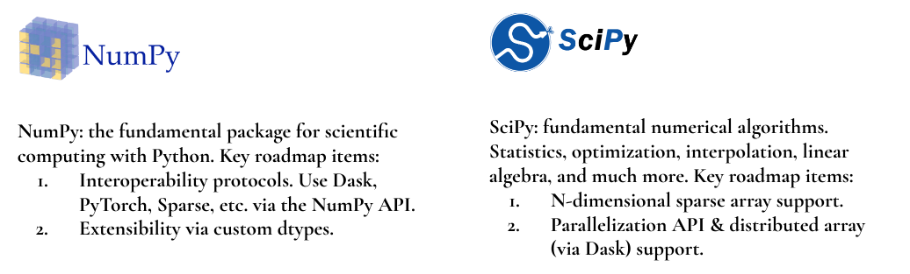

Community-driven open source and funded development
Quansight Labs is an experiment for us in a way. One of our main aims is to channel more resources into community-driven PyData projects, to keep them healthy and accelerate their development. And do so in a way that projects themselves stay in charge.
This post explains one method we're starting to use for this. I'm writing it to be transparent with projects, the wider community and potential funders about what we're starting to do. As well as to explicitly solicit feedback on this method.
Community work orders
If you talk to someone about supporting an open source project, in particular a well-known one that they rely on (e.g. NumPy, Jupyter, Pandas), they're often willing to listen and help. What you quickly learn though is that they want to know in some detail what will be done with the funds provided. This is true not only for companies, but also for individuals. In addition, companies will likely want a written agreement and some form of reporting about the progress of the work. To meet this need we came up with community work orders (CWOs) - agreements that outline what work will be done on a project (implementing new features, release management, improving documentation, etc.) and outlining a reporting mechanism. What makes a CWO different from a consulting contract? Key differences are:
- It must be work that is done on the open source project itself (and not e.g. on a plugin for it, or a customization for the client).
- The developers must have a reasonable amount of freedom to decide what to work on and what the technical approach will be, within the broad scope of the agreement.
- Deliverables cannot be guaranteed to end up in a project; instead the funder gets the promise of a best effort of implementation and working with the community.
Respecting community processes
Point 3 above is particularly important: we must respect how open source projects make decisions. If the project maintainers decide that they don't want to include a particular change or new feature, that's their decision to make. Any code change proposed as part of work on a CWO has to go through the same review process as any other change, and be accepted on its merits. The argument "but someone paid for this" isn't particularly strong, nor is one that reviewers should have to care about. Now of course we don't expect it to be common for work to be rejected. An important part of the Quansight value proposition is that because we understand how open source works and many of our developers are maintainers and contributors of the open source projects already, we propose work that the community already has interest in and we open the discussion about any major code change early to avoid issues.
There may be other community processes or preferences to respect. For example, JupyterLab has a Corporate Engagement and Contribution Guide which formulates guidelines for how corporations should engage with and contribute to the project.
The principle is simple here: be considerate to what the community wants, and operate transparently so if we make honest mistakes we get feedback and can take corrective action quickly.
Engaging companies to fund work on projects
There's an impedance mismatch between companies and open source projects. For starters, it may not be clear who speaks for the project - a "steering council", one or more maintainers, an entity like NumFOCUS, or ...? Then, when you do talk to someone involved in the project, chances are that he or she will not be in a position to do anything. I've personally experiences this multiple times in the past. As one of the more visible maintainers of SciPy and NumPy I received offers of financial support or paid development work occasionally. The answer was always easy: even if I were interested, I have a job and my employment contract does not allow me to take on any other paid work. So I cannot help you. Referring the inquirer to, e.g., NumFOCUS doesn't help - unless there's a developer who is in the position to accept a contract, not much can be done.
Quansight Labs changes this dynamic. There's a pool of people at Quansight that we can draw on already. The chicken and egg problem (how to start a career working on open source before you have contracts in place) is much more tractable now, because we can hire developers to work on a mix of open source and consulting, and ramp up the time spent on open source as funding allows.
That brings us to the next step: how to bring in this funding. With Matt Harward and Jim Martino we have a couple of very good sales people, who aim to find companies to engage in open source activities and to build long-term relationships with. In their contacts with potential clients, they can explore whether a CWO is of interest to the client and pull in a more technical person familiar with the project(s) of interest to the client as the conversation progresses. To get started though, they need conversation starters - things the open source project wants or needs. Telling a client "good to hear that you're interested in NumPy, they need some general maintenance" isn't going to go very far. Which brings us to: roadmaps.
Of roadmaps and road blocks
A roadmap is a strategic plan that defines a goal or desired outcome, [...]. It also serves as a communication tool, a high-level document that helps articulate the strategic thinking — the why — behind both goal and the plan for getting there.
Adapted from here. Note that "plan" does not imply a timeline (that's usually not possible to specify for open source projects).
A few years ago the number of projects in the PyData ecosystem that had a roadmap was at or very close to zero. That's slowly starting to change. At last years' NumFOCUS Summit, Brian Granger and I led a session on roadmaps, to share experiences and best practices in writing roadmaps. In preparation for that session I surveyed the roadmaps of all NumFOCUS projects. About half the projects had a roadmap, and of those roadmap again about half was outdated or very incomplete. So eight months ago only 25% of projects had a good roadmap, today it's probably a little higher. That's not a lot if we want to find roadmap items as conversation starters for all projects we're interested in. Luckily we can talk to project maintainers and get a few big ticket items from them (in most cases) that we can use instead.
Here's the idea: we look at a project roadmap, take a couple of ideas that we think are most likely to be of interest to a company, put those on a brochure, and let our sales team take it from there to use (to support a conversation, generate some initial interest, provide an overview of the breadth of our interests and capabilities at Quansight Labs, etc.). Here's what that currently looks like:

We aim for wide coverage, even if we don't employ a project maintainer (yet). For example, Matplotlib is an important part of the PyData ecosystem, so we want to include it. If there's interest, we talk to the Matplotlib core team and hire or contract a developer that's a good fit. Sometimes the egg has to come before the chicken.
This process mostly seems to work. The exception is when a project does not want to provide any roadmap items. That can have different reasons. Some developers simply don't like the word "roadmap", because they are of the opinion that it implies a promise or a timeline. That's mostly semantics though - if "wish list" works better, simply use that instead. For the purpose of listing some high priority items, the exact name you use doesn't really matter. And if you really can't think of any high priority wants or needs, then perhaps your project is done (is it, really? you don't want funding? nor volunteer contributors?).
One of the things we (Anthony Scopatz and I) will continue doing is working with projects to improve their roadmaps. If you're interested in this, please reach out.
Relationship with NumFOCUS
Now I hear you asking: why can't NumFOCUS do all this? The answer is: it depends. If any company wants to provide funds to support a project with no strings attached, doing that via NumFOCUS is likely the best option and we will advise that company to go that route. The nonprofit status of NumFOCUS ensures that the funding is tax-deductible (at least in the US), which is likely to be appealing. It's important to understand though that that for provided funding to be deductible, it has to be unrestricted. It cannot be "work for hire". A concrete example: giving $100k to support Jupyter development is tax-deductible, giving the same amount to implement a better table widget in Jupyter (or any other concrete feature) is not.
Another important difference is that NumFOCUS does not have developers on staff. NumFOCUS provides services to open source projects, therefore its staff is mainly skilled in things like financial administration, event planning, and marketing. When a project wants to use the funds administered for them by NumFOCUS, it needs to subcontract to an individual contractor or another company. Therefore Quansight Labs being a subcontractor to NumFOCUS for work an open source project wants done is perfectly feasible. Now of course, if funding is not tax-deductible because it's for specific features and it needs to be executed by a developer or team employed by Quansight Labs, going via NumFOCUS can be an extra layer of indirection/overhead. At that point, a CWO may be the better option.
So in summary:
- If funding is unrestricted and in support of an open source project, go to NumFOCUS.
- If the funding is for a particular purpose and requires a statement of work, consider a community work order with Quansight Labs.
What to pay for?
There's a set of important questions that I haven't touched upon yet about introducing money into a (mostly) volunteer-driven project. This will be the topic of a follow-up post, as well as a talk at SciPy'19 which evalutes the state of NumPy after a first year of paid development by two full-time engineers. One thing is clear: introducing funding into a community-driven project has to be given careful thought. We should aim to pay for things that increase the health of the project and make the lives of volunteer contributors easier rather than harder.
Give us feedback
We want to hear from you. Whether you have critical feedback, a particular concern, an idea or opportunity that could help, or anything else that's relevant - please tell us about it. We are trying to do something here that we know is hard. Working with a large and diverse community is challenging. We feel that it will be ultimately very effective and rewarding though.
You can reach out via email (rgommers@quansight.com), Twitter
(@quansightai), or in person at one of the many conferences we visit. I will
also actively be reaching out to maintainers of the projects we're including in
our sales and marketing conversations.